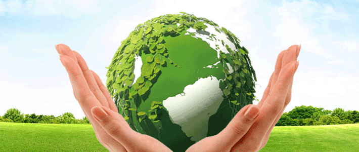
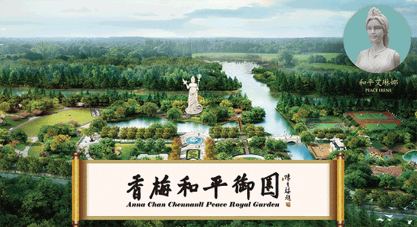
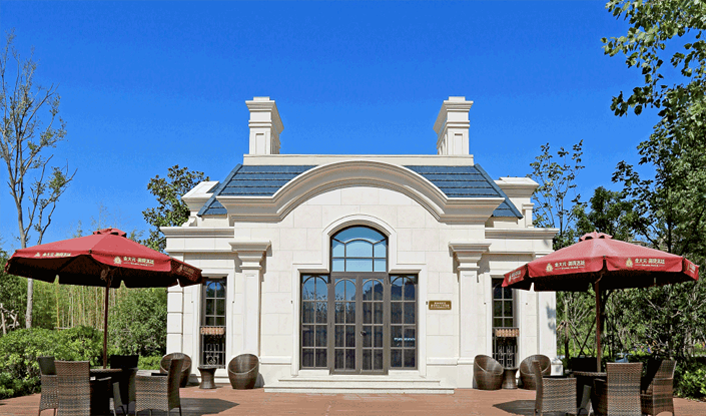
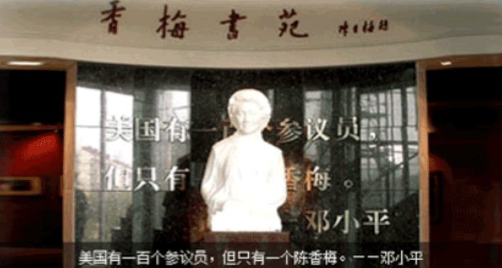
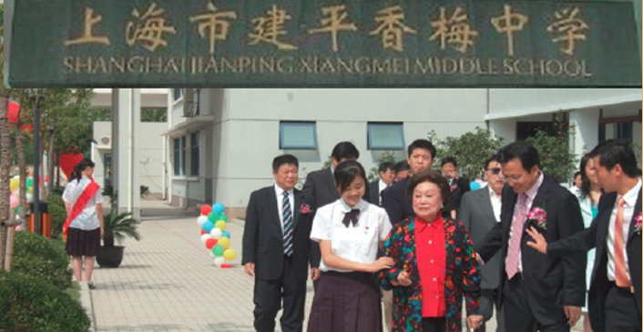
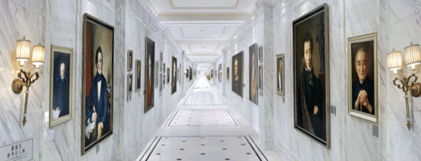
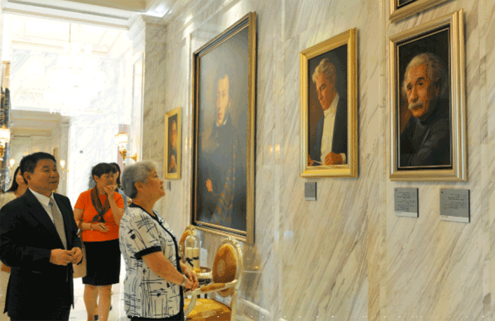
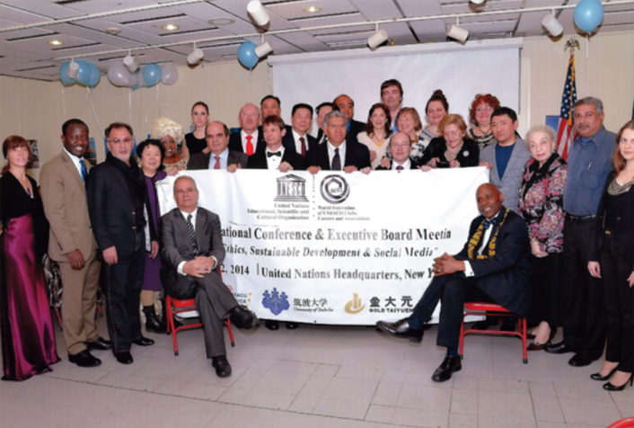

-
人文公益
在追求和探索真爱人文的征程上，高迪安从未忘记作为一名企业公民肩负的社会责任。回馈社会，为社会创造价值，从来就是高迪安真爱人文故事的演绎方式。高迪安，英文GOLDIAN，其首字母“G”，意为Global全球化、Growth成长、Green绿色。高迪安明白，只有关注世界的未来，关注人与社会的和谐成长，关注地球的可持续，“真爱人文”才会更掷地有声、铿锵有力。
2014年，高迪安在上海建造了四万平米的香梅和平御园，陈香梅女士亲笔题写园名，作为城市环境与绿化的服务支持，免费向公众开放。御园内设有上海唯一一座陈纳德将军陈香梅女士展示厅，陈列了跨国伉俪传奇的一生。
 -
人文公益
在追求和探索真爱人文的征程上，高迪安从未忘记作为一名企业公民肩负的社会责任。回馈社会，为社会创造价值，从来就是高迪安真爱人文故事的演绎方式。高迪安，英文GOLDIAN，其首字母“G”，意为Global全球化、Growth成长、Green绿色。高迪安明白，只有关注世界的未来，关注人与社会的和谐成长，关注地球的可持续，“真爱人文”才会更掷地有声、铿锵有力。
高迪安与陈香梅女士合作成立了“陈香梅文化教育专项基金”，用于支持中国教育事业的发展，并在上海市建平香梅中学设立了香梅书苑，成为上海市中小学生人文教育的示范点。
-
人文公益
在追求和探索真爱人文的征程上，高迪安从未忘记作为一名企业公民肩负的社会责任。回馈社会，为社会创造价值，从来就是高迪安真爱人文故事的演绎方式。高迪安，英文GOLDIAN，其首字母“G”，意为Global全球化、Growth成长、Green绿色。高迪安明白，只有关注世界的未来，关注人与社会的和谐成长，关注地球的可持续，“真爱人文”才会更掷地有声、铿锵有力。
为了打造别具一格的真爱人文社区，高迪安邀请知名画家为古今中外近百位世界级文化名人作画，并将画作展示于上海和昆山两地的御珑宫廷，成为极具观赏性的独特景观——世界名人廊。
多年来，高迪安累计捐资捐款数千万元，用于城市的绿化与环境保护、青少年的健康发展、社会的人文建设以及人类的未来教育等领域。
公益，是高迪安真爱人文之路上最亮丽的风景线。为了这道风景线，高迪安定将不遗余力。
